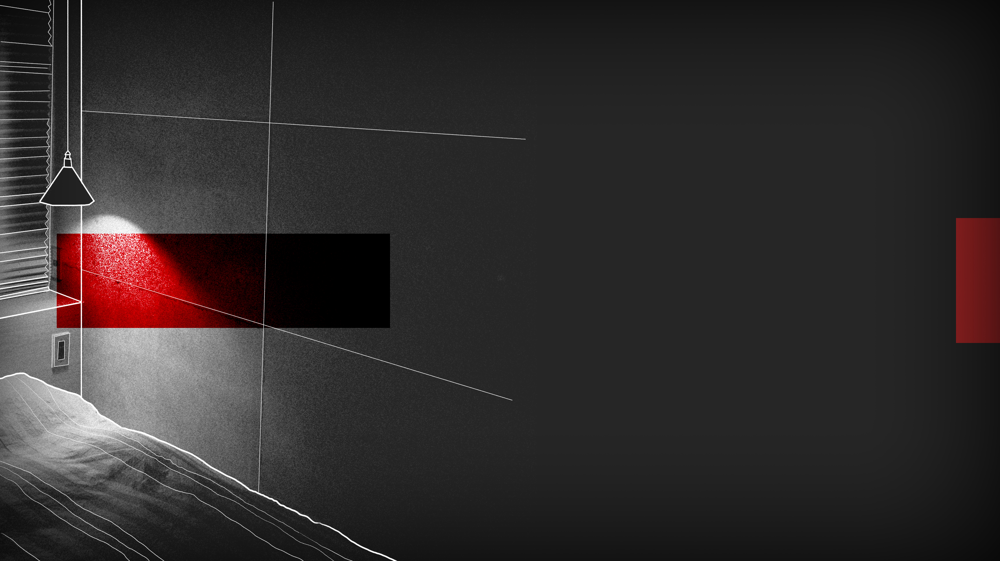

SPLITTED
SPLITTED

«Nikki hurry up, lunch is almost ready.» My father emerges from the bathroom and goes back to the kitchen.
«One second Pa!»
I sit on my bed. I'm not even hungry anymore: the only thing I'm really interested about right now is this envelope, which is burning in my hands. On the way to my home my mind filled with a sea of possibilities on what this could contain, on who the sender could be and why is it addressed to me. From the most exaggerated scenarios, which made my heart race, I tried to calm down and keep my cool. But now my patience is over.